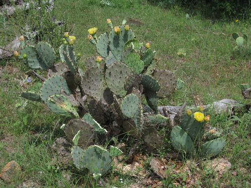
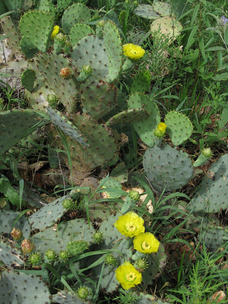
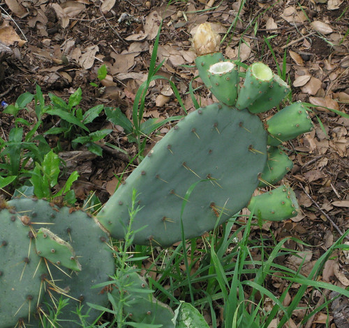
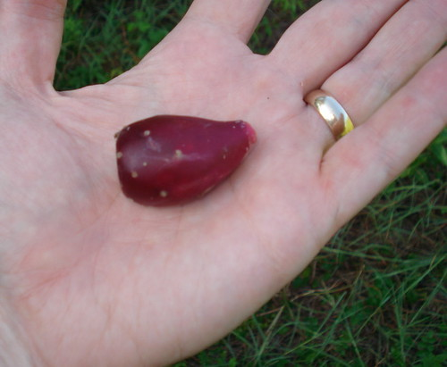
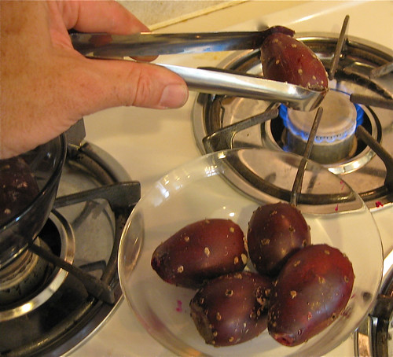

Cactus - Prickly Pear
Scientific name: Opunita lindheimeri
Abundance: plentiful
What: fruit (tunas), pads (nopalito), flowers, juice, seeds
How: peeled pads can be pickled, fried, made into jerky; fruit can be raw or blended into a smoothy/icee drink; juice from strained fruit can be drunk, made into ice cream, mixed drinks, preserves; seeds are eaten raw or roasted.
Where: sunny fields
When: fruit-late summer, pads-all year though younger pads taste better.
Nutritional Value: vitamin C, some minerals and omega-3 fatty acid
Dangers: The spines and tiny, fine hairs are very irritating and can even be fatal if lodged in the throat. Burn off the spines/hairs to remove.
Medicinal Summary:
Flowers - wound healer; strengthen capillaries; diuretic; controls release of sugars into bloodstream. (
poultice,
tisane)
Pad Pulp - speeds healing of contusions, sprains, and reduces bruises & swelling; soothes minor burns; soothes gastrointestinal inflammations. (
poultice,
tisane)
Fruit & Pads - powerful cancer preventatives
Prickly Pear in May
Close-up of prickly pear flower.
Unripe fruit
Ripe fruit.
Before doing anything with the pads or fruit you must remove their tiny, almost invisible needles called glochids. Use a barbecue tongs to harvest the pads/fruit and then burn off the glochids with a torch or gas stovetop.
The pads can be peeled then sliced and cooked like green beans though much slimier. Peeled pads can also be seasoned with your favorite beef/venison jerky spices then dehydrated into "vegan jerky".
The fruits are usually mashed, boiled, and then strained through a fine mesh such as cheesecloth to release their delicious juice. Peel the fruit then mash it up in a saucepan. Add just enough water so as to cover the pulp then boil for about ten minutes. Let the resulting juice cool a little then filter out the pulp and seeds through cheesecloth or other fine filter. This juice can be drank straight, made into jelly or wine, or slightly sweetened (it's already quite sweet) then boiled down to make a syrup.
Burning glochids off of the fruit of the similar Opunita species "Cow's Tongue" cactus.
Prickly pear seeds were part of what was called "second harvest" by certain Native American tribes. Calories were hard to come by in the Texas Hill Country so after eating the prickly pear tunas the feces would be examined and any undigested seeds were recovered to be eaten again. Personally, I prefer roasting them then adding them to other seeds to be ground into flour.